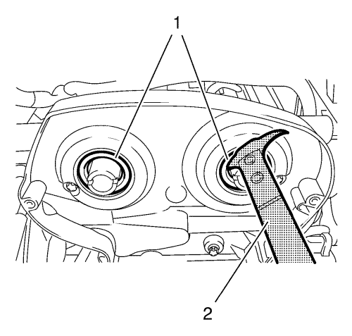
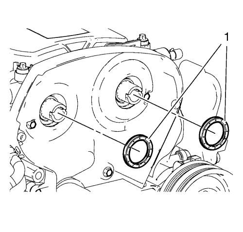
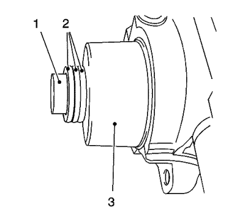

Sustitución de la junta del árbol de levas 1.6L LDE, LXV y 1.8L 2H0
Herramientas especiales
| • | EN 422 Herramienta de montaje |
| • | EN 45000 Herramienta de desmontaje |
Si desea informarse sobre herramientas regionales equivalentes, consultar Herramientas especiales
Procedimiento de desmontaje
- Desmonte el regulador del actuador de posición del árbol de levas. Consultar Sustitución del regulador del actuador de posición del árbol de levas

Nota: No dañe las superficies de contacto.
- Utilice el extractor EN-45000 para aflojar los retenes de aceite delanteros del árbol de levas (1).

- Desmonte los retenes de aceite delanteros del árbol de levas (1).
Procedimiento de montaje
- Inserte 2 retenes de aceite delanteros del árbol de levas nuevos (1).

- Apriete el anillo de junta con la herramienta de montaje EN-422 (3) en el árbol de levas hasta que toque la culata.
- Para el montaje, utilice el tornillo del piñón del árbol de levas (1) con suplementos (2) con un grosor total de aproximadamente 10 mm (0,393 pulg.).
- Monte el regulador del actuador de posición del árbol de levas. Consultar Sustitución del regulador del actuador de posición del árbol de levas
| © Copyright Chevrolet. Reservados todos los derechos |